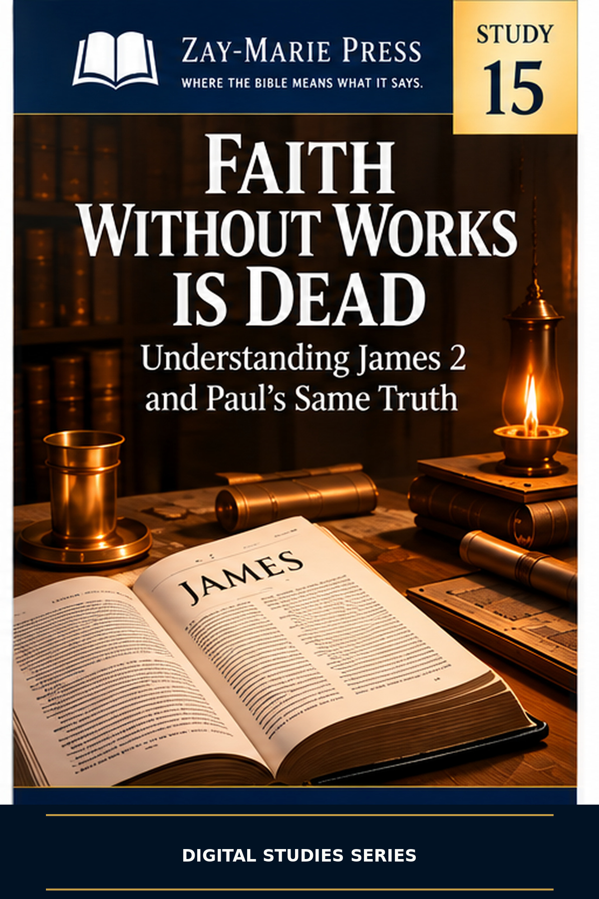
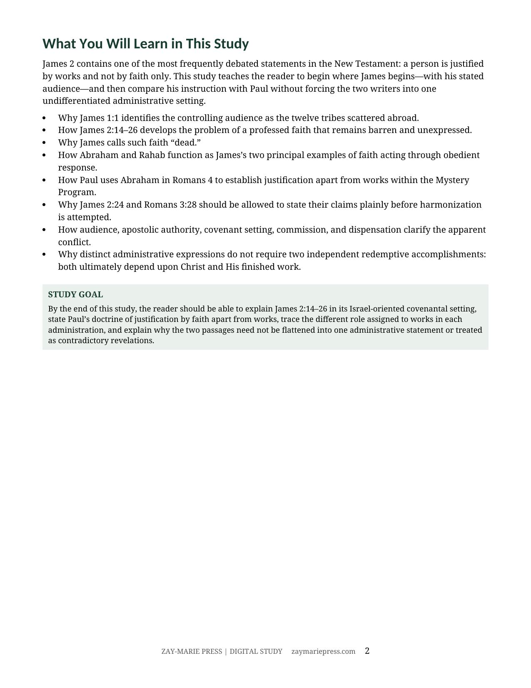
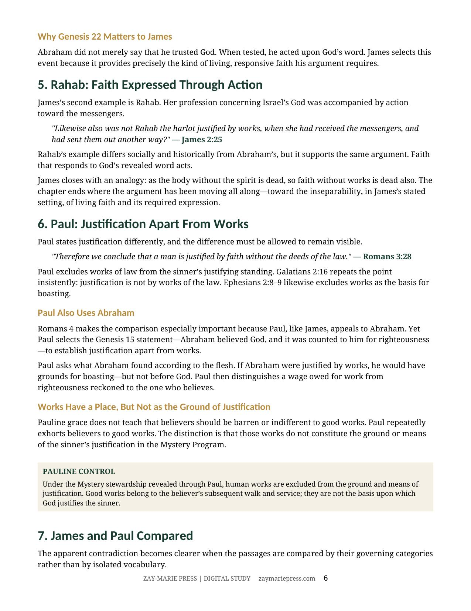
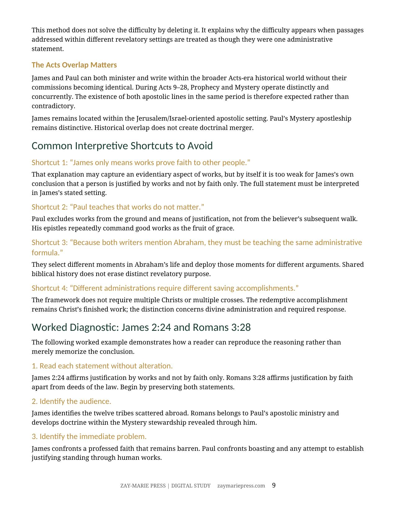
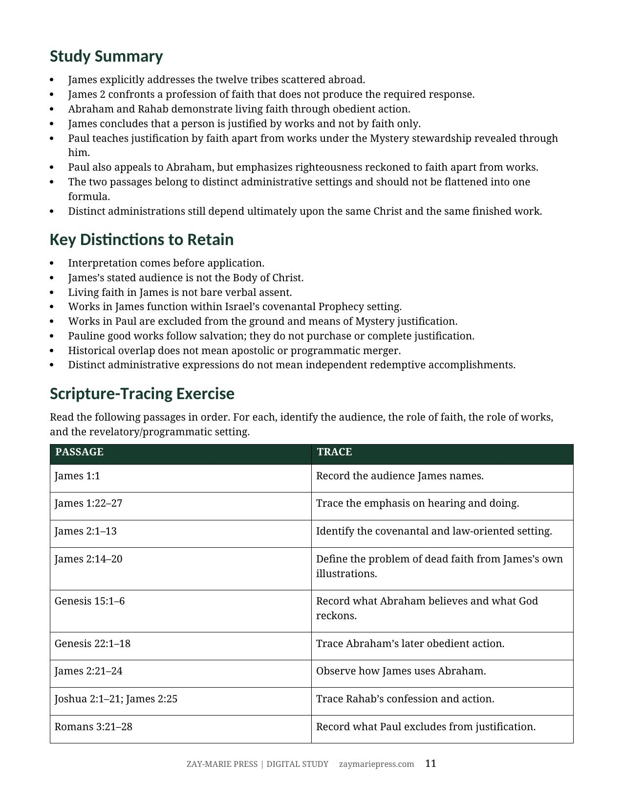

Faith and Works in James and Paul
Two Apostolic Settings, One Finished Work of Christ
A Biblical Examination of James 2, Paul’s Justification Teaching, Abraham, Rahab, and the Acts Overlap
James 2 and Paul’s justification passages should not be softened, merged, or treated as contradictory before their own settings have been established. This study begins with James’s stated audience—the twelve tribes scattered abroad—and examines barren profession, living faith, Abraham, and Rahab.
It then compares Paul’s doctrine of justification by faith apart from works under the Mystery revealed through him. The difference lies in audience, apostolic authority, covenantal setting, and administrative requirement—not in two Christs or two redemptive accomplishments.
How Do James and Paul Relate?
James addresses an Israel-oriented, covenantal audience and insists that a professed faith which remains barren is dead. His conclusion—that a person is justified by works and not by faith only—must be read within that stated setting.
Paul, under the Mystery stewardship revealed through him, excludes human works from the ground and means of justification while still commanding good works as the fruit of grace. The Acts Overlap explains how James and Paul can minister in the same historical period without their commissions or governing instructions becoming identical.
Let Each Passage Speak in Its Own Setting
James’s Stated Audience
Begin with the twelve tribes and the letter’s Israel-oriented covenantal setting.
Dead Faith
Examine James’s concern with a profession that remains barren and unexpressed.
Abraham and Rahab
Follow the examples James uses to describe living faith acting in response to God’s word.
Paul’s Justification Teaching
Read Romans, Galatians, and Ephesians on justification apart from works.
Different Revelatory Settings
Compare audience, authority, covenant setting, and the role of works without flattening either writer.
One Finished Work of Christ
Preserve distinct administrative expressions without creating independent redemptive accomplishments.
Examine the Passages for Yourself
James 1:1
Names the twelve tribes scattered abroad as the letter’s audience.
James 2:14-20
Defines the problem of a professed faith that remains barren.
Genesis 15:1-6
Records Abraham’s belief and righteousness reckoned to faith.
Genesis 22:1-18
Supplies Abraham’s later obedient action in James’s argument.
James 2:21-25
Shows how James uses Abraham and Rahab.
Romans 3:21-28
States Paul’s exclusion of works from justification.
Romans 4:1-8; Galatians 2:16
Develops righteousness reckoned apart from works.
Ephesians 2:8-10
Distinguishes salvation apart from works from the good works that follow.
Do Not Flatten the Passages into One Formula
“Let James speak to his stated audience. Let Paul speak under the Mystery revealed through him.”
James’s covenantal setting and Paul’s Mystery stewardship explain why their statements must first be heard within their own audiences and administrative requirements, while both rest ultimately upon Christ’s finished work.
Preview the Study Before You Purchase
Click any page to enlarge it for reading.
{kind=link}

What You Will Learn
See the study’s central question and its governing distinctions.
{kind=link}

Paul: Justification Apart From Works
Compare Paul’s doctrine with James without weakening either passage.
{kind=link}

Worked Diagnostic
See how audience, setting, and the role of works clarify the apparent conflict.
{kind=link}

Summary and Scripture Tracing
Test the study’s distinctions directly from the passages.
A Focused Study Built for
Understanding and Teaching
13-Page In-Depth Biblical Study
A careful reading of James 2 and Paul’s justification teaching.
Ten Core Teaching Sections
Move from James’s audience through Paul’s doctrine and the Acts Overlap.
James 2 Study
Trace dead faith, Abraham, Rahab, and James’s governing conclusion.
Pauline Justification Study
Examine Romans, Galatians, and Ephesians on faith apart from works.
James and Paul Comparison
Compare their settings, audiences, and the role works are assigned.
Worked Diagnostic
Use a repeatable sequence for difficult passages.
Teaching Outline
A ready framework for presenting the distinction with care.
Guided Study and Synthesis
Trace the passages directly while preserving Christ’s finished work.
Faith and Works in James and Paul
13-page digital PDF · For personal use